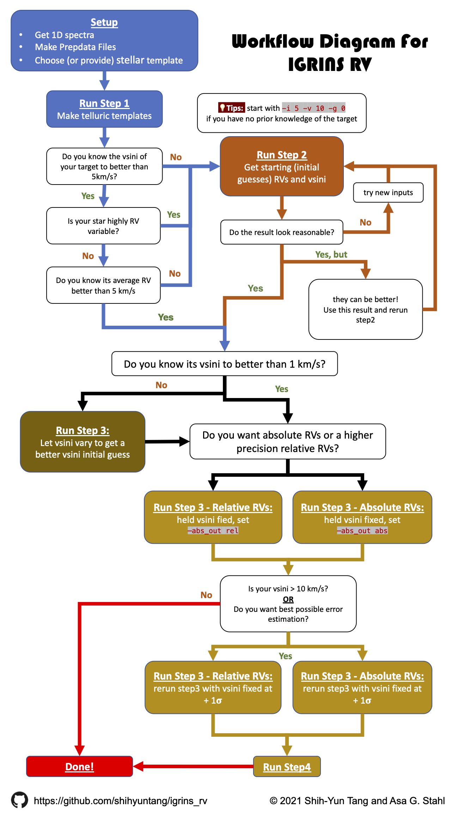

Overview and Workflow#
For a detailed understanding of how IGRINS RV works and how it should be run,
it is HIGHLY recommended that the user reads the associated paper, Stahl et al. 2021 arXiv.
IGRINS RV is divided into three main steps:
Telluric Modeling
Initial Convergence
Analysis
There are also two other steps that can be run, depending on the user and their science. Each step is provided in the package as a separate file and can be run from the command line with keywords specifying all relevant information.
A diagram showcase the workflow: 
All steps are run as
(igrins_rv) ~$ python main_stepX.py [target name] [keywords]
where X is the step number (0-4) and information on the keywords for the step can be found with
(igrins_rv) ~$ python main_stepX.py [target name] -h
The -h command here means –help.
Workflow Summary (Read this)#
Read the individual wiki pages of the different Steps as you come to them!
First, check through the three “Setup” pages on this wiki to make sure your input data has been properly reduced, your PrepData files are in order, and to decide on what stellar template you plan on using.
Run Step 1. This will define which wavelength regions that will be analyzed, and generate a synthetic, high-resolution telluric template for use in later model fits on a night by night basis. This step only needs to be run once per target/band combination.
In order to run Step 3 (Full Analysis), IGRINS RV needs good starting values (known to better than ~5 km/s accuracy) for the vsin(i) and RVs of your target star.
If you know the vsin(i) and the average RV, and you know the RV variance of your star is < 5 km/s (so that this average RV is representative of all your observations) , then you can skip Step 2 and jump straight to point #5 on this list.
If you don’t know these values or your star is highly RV variable (like a binary system or an exoplanet host), then run Step 2 to get their estimates. Step 2 will perform an abbreviated analysis of your target star observations in order to converge to coarsely accurate RVs and vsin(i).
You may need to run Step 2 multiple times to converge to good starting values (If you do not have any clue of these values). The first time you run Step 2, you provide an initial guess for the average RV of your star, and it is applied uniformly to all your observations. The code then outputs its RV estimates for each separate observation, as well as the average of these estimates.
If your star is not RV variable, you could then simply re-run Step 2 with this new average RV as your initial guess.
If your star is RV-variable, you may instead instruct IGRINS RV to use the previous Step 2 output’s RV estimates from each separate observation. In this way, you can run Step 2 as many times as you’d like, using the outputs of previous runs as starting points in subsequent runs.
With a good starting guess for the vsin(i) and average RV of your star, you should not need to run Step 2 more than once - but with a poor starting guess, you may need to run it several times.
Run Step 3.
If you know the vsin(i) and the average RV, and you know the RV variance of your star is < 5 km/s, then you can provide an initial guess for the average RV of your star that will be uniformly applied to all your observations. Otherwise, you may use your favorite output from Step 2 to provide the initial RV guesses for Step 3.
If the target star vsin(i) is already known to high accuracy (< ~1 km/s), then Step 3 needs only be run once - the code will fully converge to the final RVs (within uncertainty) through just one run.
If not, an initial run of Step 3 in which vsin(i) is allowed to vary is required. This will provide a more precise estimate of vsin(i), which you will then plug in as a fixed value in a second run of Step 3.
If you choose to run Step 3 more than once, and want your subsequent runs of Step 3 to use the previous runs’ outputs as starting points, then those runs must be set to output absolute - not relative - RVs via the appropriate keyword (“-abs_out abs”).
If you want the most precise RVs, don’t care about measuring the absolute RV of the star, and don’t plan on using the output of the Step 3 run you’re about to do as starting guesses for another Step 3 run, then set the keyword to compute relative RVs (“-abs_out rel”).
If the user seeks the best possible RV uncertainty estimates, or if their target star has a relatively high vsin(i) (> 10 km/s), then an additional run of Step 3 is required, this one with vsin(i) held fixed at its estimated value plus or minus one sigma. The user then runs Step 4, which simply incorporates the minor differences in the RVs of the two runs (as low as < 1 m/s and as high as 9 m/s) to revise the final RV uncertainties.